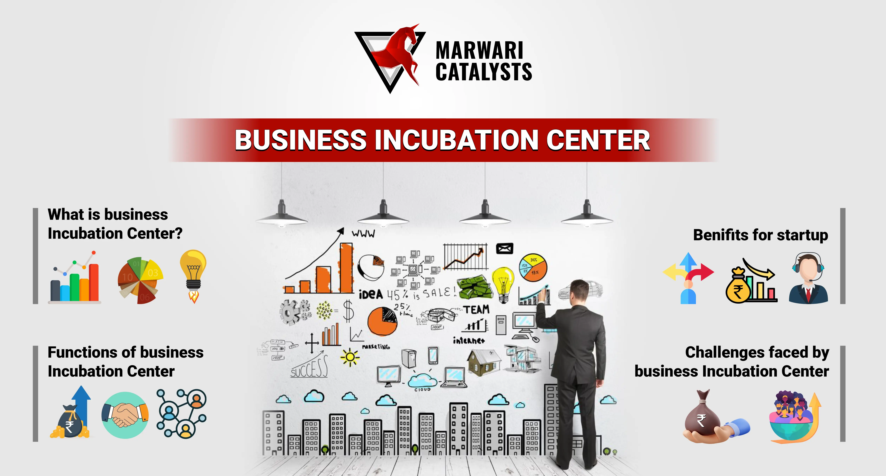
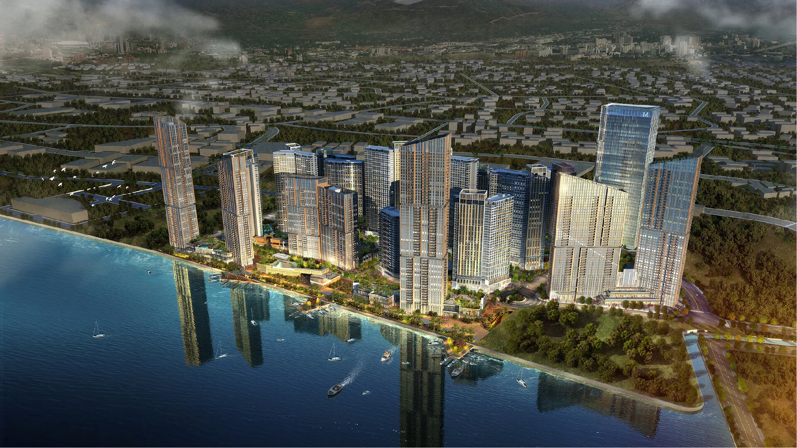

Economic Growth in Cebu
The Cebu government has taken substantial steps to stimulate economic growth by attracting investments, improving infrastructure, and creating opportunities for local businesses. This has led to increased job opportunities and a growing economy.
Key Economic Development Strategies
- Development of special economic zones for tech companies
- Establishing business incubators and financial support for SMEs
- Promoting Cebu as a tourist and investment hub
The development of special economic zones for tech companies fosters innovation and attracts investment in the technology sector.
These zones provide favorable conditions for tech startups to grow, creating job opportunities and driving economic growth.

Establishing business incubators and financial support for SMEs helps foster entrepreneurship and innovation in local communities.
By providing resources and guidance, these initiatives enable small and medium enterprises to thrive and contribute to economic development.

Promoting Cebu as a tourist and investment hub boosts its economy and attracts both domestic and international visitors.
By highlighting its rich culture, beautiful landscapes, and business opportunities, Cebu can become a leading destination for tourism and investment.

Future Economic Plans
- Expanding export markets for local businesses
- Encouraging sustainable investments in renewable energy
- Improving the digital infrastructure for e-commerce and startups
Expanding export markets for local businesses opens new opportunities for growth and global recognition.
By connecting local products with international consumers, businesses can diversify their revenue streams and enhance economic resilience.

Encouraging sustainable investments in renewable energy accelerates the transition to a greener and more sustainable future.
By supporting clean energy projects, investors can help reduce carbon emissions and foster long-term environmental benefits.

Improving the digital infrastructure for e-commerce and startups is crucial for fostering innovation and business growth in the digital economy.
Enhanced connectivity and access to digital tools empower entrepreneurs to reach wider markets and scale their businesses effectively.